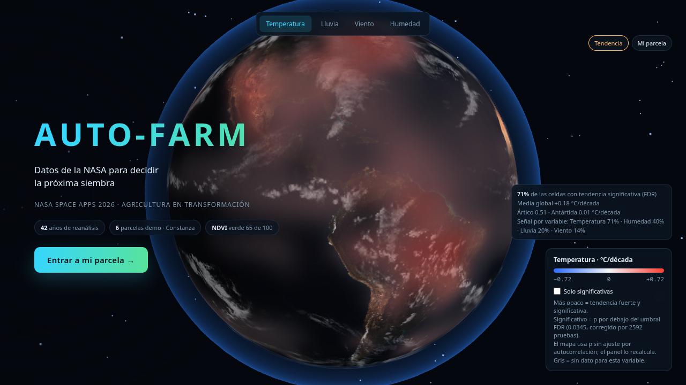
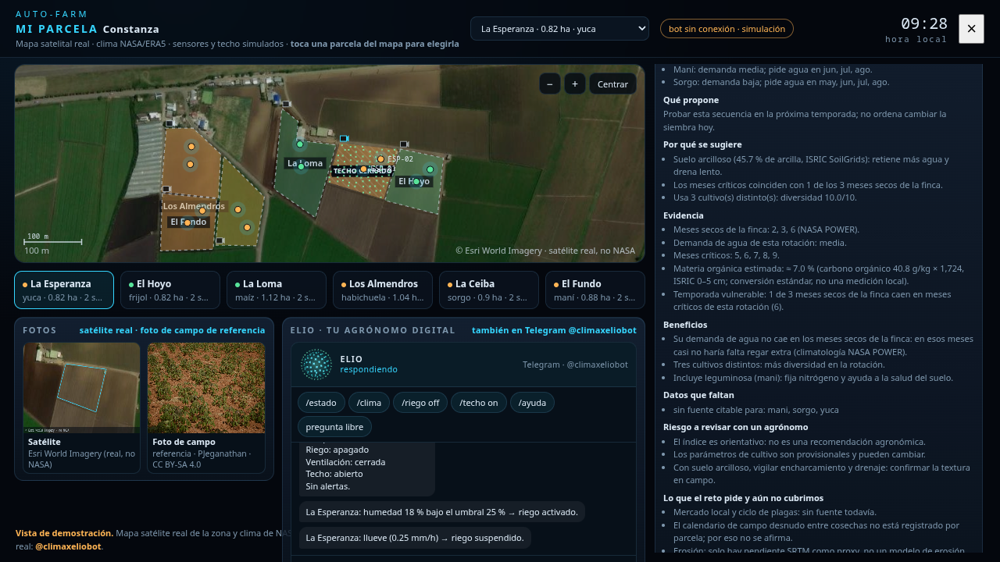

Auto-Farm
Datos de la NASA
para decidir la próxima siembra
Tendencias de 42 años, la temporada en curso y la rotación que conviene.
Con la incertidumbre a la vista, no escondida.
NASA Space Apps 2026 · República Dominicana
AUTO-FARM1 / 11
El problema
El agricultor decide con el clima del año pasado
Su clima no es el del promedio
Dos fincas del mismo país, la misma semana:
Y los datos no llegan a su mano
Los satélites producen capas globales; él necesita una respuesta para su parcela.
+103 %
Azua, lluvia de 30 días sobre su normal
(178 mm vs 88 mm · 13 nov 2026)
+3 %
Constanza, misma ventana
(127 mm vs 124 mm)
Un promedio nacional habría ocultado las dos realidades.
Fuente: Open-Meteo / ERA5 (no NASA), comparado con su propia normal 1991–20202 / 11
Lo que ya funciona
Tres lentes, una decisión
1 · 42 años de tendencia
Globo con 2.592 celdas: Sen y Mann-Kendall por variable, corregido por pruebas múltiples (FDR) e intervalo de confianza.
2 · La temporada
30 días de lluvia, temperatura y humedad frente a su normal, y riesgos NASA POWER: calor, lluvia intensa, días secos, heladas, suelo de raíz y ET.
3 · Las rotaciones
Actual, alternativa 1 y alternativa 2: índice, evidencia NASA (meses secos), beneficios, datos que faltan y riesgo a revisar.


La comparación vive dentro de «Mi parcela»; el globo es el mapa global. El reto pide 3 estrategias con evidencia, huecos y riesgos, y riesgos climáticos reales (calor, lluvia intensa, secos, heladas, suelo y ET): aquí están.
NASA POWER + ERA5 + ISRIC · datos precargados3 / 11
El producto completo
De la estimación a la finca conectada
Instalación
Sensores ESP32, riego y techo motorizado por parcela; registro con imagen aérea.
Automático
Riega bajo 25 % de humedad y cierra el techo con lluvia real de ERA5.
Bot real de Telegram
/estado, /riego off, /techo on a @climaxeliobot;
Elio responde preguntas libres con los datos de la finca.
Satélite, fotos y GPS
NDVI, IMERG, terreno SRTM, foto de campo con licencia y análisis de color.
La app, el mapa, el clima (NASA/ERA5) y el bot son reales.
Los sensores, el techo y la cámara son simulados.
Funciona hoy · hardware pendiente4 / 11
Cumplimiento del reto
El reto, punto por punto
1 · Tres rotaciones
La actual y dos alternativas, con índice basado en meses secos (NASA POWER).
2 · Porqué, evidencia, huecos y riesgos
Cada estrategia se abre con las cinco cosas; el riesgo se revisa con un agrónomo.
3 · Incertidumbre
FDR sobre 2.592 celdas, bootstrap, p ajustada y bandas P25–P75.
4 · Satélite frente a suelo
NDVI (289 m) e IMERG (2,3 km) no ven una parcela de 1 ha: se explica.
5 · Prioridades del agricultor
Agua y diversidad; el escenario de lluvia es sensibilidad, no pronóstico.
6 · Móvil y bot real
La vista entra en un teléfono y el bot mueve los actuadores.
Field Shift: Adapting Farms with NASA Data · 20265 / 12
Evidencia en pantalla
Lo que ves es lo que hay
Riesgos climáticos reales (NASA POWER) y satélite
real (MODIS/IMERG): el píxel y la incertidumbre se explican en pantalla.
Capturas de la app en vivo · 14-nov-20266 / 14
El corazón del reto
Tres rotaciones, la misma evidencia
59/100
Actual · yuca
Demanda de agua alta en los meses secos de la finca.
76/100
Alternativa 1 · maíz → frijol
El frijol fija nitrógeno y reparte el riesgo de agua.
93/100
Alternativa 2 · 3 cultivos
Yuca → maní → sorgo: más diversidad y menos riego en seco.
Con lluvia −40 %: 55 / 72 / 89 ·
simulación de sensibilidad, no un pronóstico.
Qué falta: mercado local y ciclo de plagas ·
Qué revisar: el riesgo con un agrónomo. El índice es orientativo.
NASA POWER (meses secos) + cultivos · índice orientativo7 / 15
Por qué nosotros
Lo que casi nadie hace: decir qué no sabe
- No mezclamos fuentes. Comparar una normal de un modelo con un dato de otro mide el desajuste entre modelos, no el clima: vimos cocientes de 0,36 a 4,78 en una misma finca.
- Corrección por pruebas múltiples. Con 2.592 celdas, sin FDR saldrían ~130 «tendencias» falsas por variable.
- Incertidumbre visible: banda normal, intervalo de confianza, p ajustada.
- El asistente no inventa: responde solo con lo que hay en pantalla y cita la fuente.
- Necesita red para datos en vivo, consulta desde el móvil y alertas; 0 librerías externas y 3 MB.
Esto es lo que un agrónomo o un inversor puede auditar. La confianza se gana así.
168 pruebas automáticas · bot real incluido5 / 11
Modelo de negocio
Modelo Canvas de Auto-Farm
Segmentos
Cooperativas y productores de hortalizas, tubérculos y granos.
Agrónomos y técnicos. Agroindustria por validar.
Propuesta de valor
42 años de NASA + tu finca en una decisión. Tres rotaciones con
evidencia, huecos y riesgos. Incertidumbre a la vista.
Canales
Web y móvil, bot de Telegram, talleres con cooperativas y
agrónomos de confianza.
Relación
Acompañamiento en la primera temporada; soporte humano y bot;
la app no sustituye al agrónomo.
Ingresos
Suscripción por finca, licencia a cooperativas y kit de sensores.
Precio y mercado por validar con 3–5 pilotos.
Recursos
POWER, ERA5, GIBS e ISRIC; motor Sen + FDR; app sin librerías;
bot real; equipo y red de agrónomos.
Actividades
Mantener y validar datos, recomendaciones con evidencia, instalar
sensores y formar técnicos.
Asociaciones
UNIROMANA, cooperativas, agrónomos locales y proveedores ESP32.
Costes
Desarrollo, hosting bajo, hardware piloto, validación agronómica
y visitas de campo.
Sin clientes todavía: precios y mercado por validar con 3–5 pilotos.
El reto pide un producto; el Canvas ordena el negocio6 / 13
Modelo de negocio
Suscripción por finca, hardware incluido
Hardware
Kit por parcela: ESP32 + sensores + válvula + techo. Venta o arrendamiento.
Suscripción
Panel, avisos y recomendaciones por finca y mes. Escala con hectáreas.
Servicio
Instalación, calibración y acompañamiento con un agrónomo local.
Precios, coste del kit y margen: por validar con 3–5 fincas piloto.
No presentamos cifras que no hayamos medido.
Pendiente: coste real de hardware y disposición a pagar6 / 11
Mercado
A quién le duele esto
Primero
Pequeña y mediana finca de clima tropical con estación seca marcada:
hortalizas, granos y raíces. Deciden sin datos y pierden agua y cosecha.
Después
Cooperativas y agroindustria que necesitan trazabilidad climática de sus proveedores.
Tamaño de mercado, número de fincas y competidores locales: por validar.
Es el primer trabajo de la siguiente fase, no un dato que podamos afirmar hoy.borrador
Sin cifras de mercado hasta tener fuente7 / 11
Estado
Qué hay hecho, de verdad
2.592
celdas con tendencia
y significancia corregida
3
fincas piloto con
climatología de 30 años
209
pruebas automáticas
+ navegador y satélite
0
librerías externas
en la demo
- Demo funcional y verificada desde un clon limpio.
- Repositorio público, con el método y los límites escritos.
Sin clientes todavía: la validación empieza con los pilotos8 / 11
Hoja de ruta
Los siguientes 12 meses
1 · Validación agronómica
Parámetros de cultivo revisados por agrónomos y 3–5 fincas piloto con datos de suelo medidos en campo.
2 · Hardware
Kit ESP32 con riego y techo, probado en una parcela durante una temporada completa.
3 · Producto
Panel para el agricultor, avisos por Telegram y registro de parcelas con dron.
4 · Comercial
Precio validado, primeras cooperativas y métricas de ahorro de agua y de cosecha.
El orden importa: primero medir, después prometer9 / 11
Equipo
Quién lo está construyendo
Dirección y arquitectura
Brian · liderazgo del proyecto e integración de datos, app y bot
Datos y climatología
Ruben · climatología NASA POWER de las fincas piloto
Temporada
Yoel · serie reciente, anomalías y caché sin conexión
Interfaz y producto
Oscar · monitor, tarjetas y experiencia del agricultor
Agronomía y motor
Marlon · motor de rotaciones y criterios de decisión
Calidad
Alison · pruebas, textos y revisión de lo que se afirma
Equipo del NASA Space Apps 2026. Sumamos agrónomo asesor, especialista en hardware ESP32 y comercial con red en cooperativas.
Roles por confirmar con cada persona antes de publicar10 / 11
Qué buscamos
Un piloto, no un cheque en blanco
Tres a cinco fincas y un agrónomo para validar los parámetros.
Con eso medimos el ahorro de agua y la mejora de decisión, y ahí sí
podemos hablar de inversión con números propios.
Demo en vivo: kirixdj.github.io/tierra/web/
· Código: github.com/KIRIXDJ/tierra
Lo que no vamos a decir: cifras de mercado sin fuente, ahorros que no hemos medido
ni hardware que todavía no hemos instalado.
Gracias · preguntas11 / 11